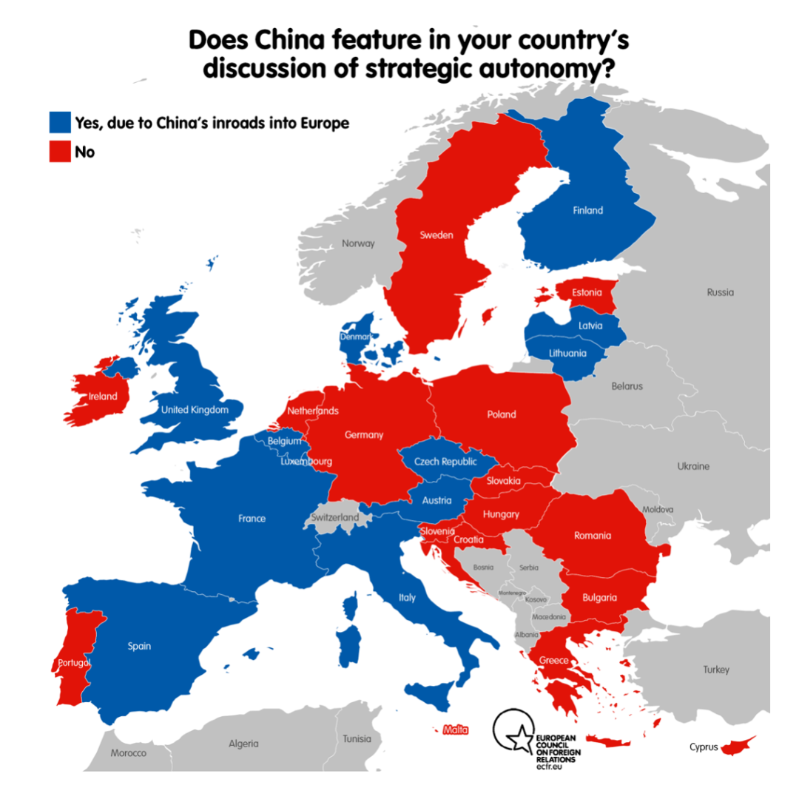
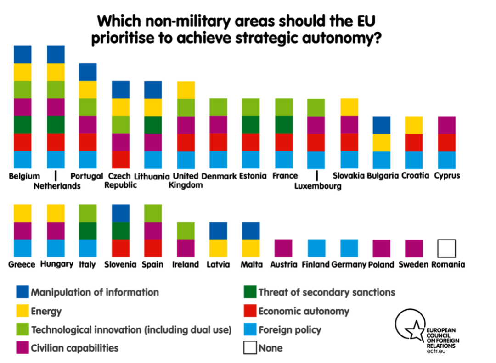

收录于合集 #国政评论 8个

【作者】彭霏霏（国政学人评论员，复旦大学国际关系与公共事务学院）
【排版】林祉欣
“战略自主”（strategic autonomy）是欧盟内部最近的热点话题。对于中国来说，其似乎意味着欧盟将“在中美之间保持自主行动能力”，而不是选边站，追随美国对中国进行遏制。2020年末，欧盟顶住美国压力，积极推动《中欧全面投资协定》谈判顺利完成，即被视为战略自主的一大体现。对此，王毅外长表示了积极态度，中国驻欧盟大使张明也在采访中表示，希望欧盟可以秉承战略自主的精神，妥善处理中欧关系。从表面上看，这似乎意味着中国外交的一种解脱和放松：亦即欧盟不会在美国的重新拉拢下，加入对抗中国的阵营；而是将具有自己的意志和行动，成为一股独立理性的、可以联合的强大力量。
然而，事实真的如此吗？首先，“战略自主”语义高度模糊，同“欧洲军队”、“共同的战略文化”一样令人难以琢磨，欧盟各成员国尚未就这一概念达成共识。同时，种种迹象表明，打着战略自主大旗不代表欧盟已经摘下对华的有色眼镜。中国国际问题研究院欧洲研究所所长崔洪建就表示，欧盟正在效仿美国的方法，通过国内建立“全球人权制裁机制”并将其法律化而对他国内政进行长臂管辖，拿俄罗斯和中国开刀。通过国内立法干涉他国事务，这本身就是美国霸权的单边主义做法；一旦欧盟效仿，则意味着欧盟失去了自身战略意志的独立性与自主性。换言之，战略自主很有可能沦为一个空洞的口号，成为掩盖新形势下权力斗争的幌子。
为了更好了解战略自主及其含义，本文将先对该概念演变做一简要梳理；之后，本文将引介两篇欧洲智库文章并进行分析：第一篇从应然层面上阐述了常被误读的“战略自主”概念；另一篇则通过访谈大量专家，从实证角度分析了欧盟各成员国对于“战略自主”图景的理解与分歧。不难发现：（1）战略自主概念起源于防务领域，并在2018年一跃成为欧盟辩论热点，遂从防务领域泛化到经济、贸易、技术等一系列其他领域。（2）战略自主的内涵是在权力政治（realpolitik）日渐回归国际政治舞台的大趋势下，欧盟保持战略定力、坚持“规则优先”（rule- first）的外交原则，并增强在防务、经贸和科技三个关键领域塑造规则（rule shaping）和设置议程（agenda setting）的能力。（3）从现实访谈的结果来看， 防务领域依旧是欧盟希望实现战略自主的核心领域 ：首先，欧盟国家普遍担忧美国对战略自主产生误解——误将战略自主实质当作“欧盟反对美国”；因此，大部分欧盟成员国自然达成一项共识， 即战略自主能力乃是欧盟在周边地区（包括东欧、北非和中东） 展开行动的能力。与之相应，防务领域的战略自主可以有效补充美国主导下的北约防务体系，为北约分担防务责任。（4）当然，各成员国对战略自主也存在理解差异。仅以德法两个核心国家为例，就可以发现两国的理解存在根本差别： 比如在对华问题方面，法国认为中国对欧盟安全产生了威胁，而德国则持有相反观点 。此外，在哪些非军事领域应该战略自主的看法上，法国认为应在所有领域都应该实现战略自主，而德国则认为应当仅在外交领域增强欧盟自主性。（5）鉴于大部分欧盟成员国均赞同提高外交自主性的目标，欧盟未来外交政策应该会在美国外压影响下，保持对华政策上更高的独立性和灵活性。
01
战略自主的概念演变
粗略来看，“战略自主”概念的演变可以被划分为三个阶段。
第一阶段是法国提出该概念阶段。从历史上看，法国向来具有试图摆脱美国附庸身份的传统。1994年，法国首次在国防白皮书中使用了“战略自主”这一术语，以至于许多欧盟成员国将战略自主视为法国的概念。
第二阶段是欧盟开始践行防务自主的阶段。为了实现此目标，欧盟建立了一系列不同于北约的防务机制，如著名的共同安全与防务政策（CSFP）。
第三阶段是战略自主成为欧盟热点话题的阶段。2018年，马克龙和默克尔相继表示希望建立一支“欧洲军队”，让“欧洲的命运牢牢掌握在欧洲人手中”。在此之后，关于战略自主的辩论便开始兴起。其导火索是特朗普政府一系列的单边主义行为，包括掀起对欧钢铝和汽车关税制裁、退出伊朗核协议以及威胁取消北约。这些行为给欧盟带来了不安全感，欧盟外交与安全政策高级代表傅雷利（Josep Borrell）表示特朗普政府的举动“将欧盟从战略梦游中唤醒”。
综上，欧盟希望实现战略自主的目标一开始只存在于防务领域。但随着讨论变得越发激烈，该概念含义也逐渐泛化， 开始从防务领域延伸到、贸易、工业政策、数字政策、经济和货币政策以及卫生政策等其他领域 ，意味着欧盟将在这些领域中拥有更大的独立性、自力更生能力和复原力。
与之相应，战略自主这一概念也开始与中欧关系日益勾连起来。具体而言： （1）如果战略自主的目标只限于在防务领域讨论，其实并不会对中欧关系产生实质影响： 因为对于欧盟国家而言，其防务威胁主要来自于周边国家，主要包括乌克兰及巴尔干、北非和中东地区。毕竟，只有欧盟周边地区的动荡，才会对其产生显著的非传统安全威胁，比如因科索沃战争和叙利亚内战而产生的难民和恐怖主义威胁。不过，这些地区的情况却不会对美国产生直接的危害，故而后者缺乏动力在这些地区作出利于欧盟的安排；同时，由于中国并没有干预上述地区的任何意愿，因此战略自主同中国关系不大。（2）但是， 如果当欧盟在贸易、工业政策、经济等众多领域也要实现战略自主目标时，这一讨论就转变为欧盟是否会追随美国并在经贸和高科等领域封锁中国的问题。
02
战略自主应该是什么
所以，究竟什么才是“战略自主”？来自欧洲政策中心（European Policy Center）“世界中的欧洲”项目主任兼高级研究员Giovanni Grevi在《欧洲选择的战略自主权：欧洲塑造能力的关键》（Strategic Autonomy for European Choices: the Key to Europe’s Shaping Power）中对此在应然层面上进行了详细剖析。Grevi认为，中美竞争已经成为当今国际关系中的关键特征，而 战略自主的首要目标就是为了防止欧盟在日益复杂的国际关系背景中成为他国决策的牺牲品。 换言之，战略自主不代表着欧盟将自绝于世界舞台，而是意味着在世界政治中采取更积极的态度构建合作伙伴关系。在他看来，目前的大国竞争趋势，意味着主导全球格局数十年的 新自由主义范式将逐渐转换成为权力政治范式 ；而两种范式的本质区别，在于前者是规则主导下的竞争与合作，后者是权力主导下的斗争与对抗。对此，欧盟应该坚持不对抗的态度，努力用非零和博弈的眼光对待国际事务。同时，欧盟应该努力加强自己塑造国际秩序的能力，努力建成一种“规则优先”（rule- first）的外交原则。为实现战略自主，欧盟在在外交上应该坚持多边主义，其核心要义是欧盟需要保持并增强自己在世界政治中塑造规则的能力，包括国防、经济与科技领域。总之，战略自主意味着欧盟在大国关系上要保持不对抗（non- adversarial）态度，坚持对国际事务作“非零和博弈式”解读，坚持“规则优先”的外交战略，努力培养其在核心领域进行规则塑造和议程设置的能力。
03
战略自主的实质是什么
由欧洲对外关系委员会（European Council on Foreign Relations）的政策研究员Ulrike Franke和Tara Varma撰写报告《独立游戏：欧洲对战略自主权的追求》（Independence Play: Europe’s Pursuit of Strategic Autonomy）则从实证角度分析了欧盟各成员国对于战略自主的理解异同。对此，两位研究人员采访了100多位欧盟各国决策者和分析师，并结合了诸多政策文件、学术论述、媒体分析和民意测验。
首先，《独立游戏》报告认为， 美国屡次批评欧盟建立共同防御能力，无疑引起了欧洲人的普遍担忧 ：欧盟害怕美国将误解战略自主的本意，认为欧盟企图反对美国在防务领域的领导权。换言之，欧洲国家赞同战略自主并不意味着欧盟要拒绝美国提供的帮助，从而实现防务上的自给自足；相反，战略自主意味着在美欧利益不一致的情况下，欧洲有能力对区域性危机进行干预，尤其是欧洲东部和南部侧翼的区域危机。大多数成员国（24个成员国）认为，战略自主的工作应集中在欧盟的周边地区，包括东欧、中东和北非。
其次，对于“中国问题在贵国战略自主的相关讨论中是否具有一席之地”的问题，超过一半的欧盟成员国（15个）表示了否定（见下图） 。其中，德国和法国这两大欧盟的核心国家具有不同看法：法国认为，中国牵头的中东欧“16+1”合作机制已经对于欧洲产生了一定威胁，而德国则表达了相反态度。

“中国在你们国家对于战略自主的讨论中是否有特色”，图片来源：https://ecfr.eu/special/independence_play_europes_pursuit_of_strategic_autonomy/
此外，在“欧盟应该在哪些非军事领域实现战略自主”的问题上，德国和法国的理解大相径庭：法国认为，欧盟应该在包括经济、技术和外交等领域全方位地推进战略自主，而德国则认为在外交领域推行战略自主已然足够。这说明了欧盟成员国相关共识主要集中在防务领域，在其他领域尚未形成一致看法。在进一步分析中，报告发现不少国家（18个成员国）已将外交政策领域的战略自主作为了欧盟首要目标；反之，那些没有将外交自主列为优先事项的国家，大多数是中东欧国家（如波兰），它们出于对俄罗斯的恐惧希望活在美国的庇护之下，或者是中立国家如奥地利和瑞典。因此，外交自主很可能在未来发展中成为推进战略自主的重要方向。

“欧盟应该在哪些非军事领域实现战略自主”，图片来源：https://ecfr.eu/special/independence_play_europes_pursuit_of_strategic_autonomy/
总结
综上所述，我们可以对“战略自主”对于中美竞争下中欧关系的影响做如下分析：第一，战略自主在应然层面包含了强调国际规则的精神；但在实际情况中，欧盟不一定有定力坚持这种战略自主。其中一种可能情况是，在“国际规则”的借口下，欧盟利用人权等问题对中国事务进行干涉，在经贸、科技等问题上构建非关税壁垒，限制中国的实际竞争力。但是，我们同样也不应该忽视，在战略自主体现的坚持多边主义、不对抗、国际规则的精神与中国要构建“不冲突、不对抗，相互尊重、合作共赢”的大国关系有异曲同工之处，这将为权力政治逐渐回归、现实主义日益浓烈的国际政治增添开放与和平的力量。第二，从欧盟成员国对于在外交领域追求战略自主的意愿来看，未来欧盟外交政策的独立性将进一步加大，这将减轻美国外压产生的压力，欧盟的外交政策将更大程度地由其成员国共同决定。这意味着在涉及中国的议题上，尤其是美欧存在分歧的议题中，欧盟将坚持用独立、理性的态度来对待外交事务，并为中欧在上述领域合作提供了更大空间。
参考文献
1.5.6. 崔洪建:《欧盟“战略自主”切莫找错方向》，载《环球时报》，2021年4月1日，https://opinion.huanqiu.com/article/42XTiLld86s，访问时间：2021年4月25日。
2.《王毅：希望欧方坚持战略自主，警惕个别国家挑动》，载《人民日报》，2020年7月30日，http://app.peopleapp.com/Api/600/DetailApi/shareArticle?type=0&article_id=5785381，访问时间：2021年4月25日；
3.《张明大使同“欧洲之友”智库学者举行线上“战略对话”》，中国驻欧盟使团，2021年1月29日，https://www.thepaper.cn/newsDetail_forward_10995928，访问时间：2021年4月25日。
4.7.13.15.Ulrike Franke, Tara Varma, “Independence Play: Europe’s Pursuit of Strategic Autonomy”, European Council on Foreign Relations, July 18, 2019, https://ecfr.eu/special/independence_play_europes_pursuit_of_strategic_autonomy/, 访问时间：2021年4月25日。
8.Michael Smith, “Transatlantic Security Relations since the European Security Strategy: what role for the EU in its pursuit of strategic autonomy?”, Journal of European Integration, Vol.40, No.5, 2018, pp.613.
9. “Merkel Joins Macron in Calling for a ‘Real, True European Army’”, the Guardian, November 13, 2018, https://www.theguardian.com/world/2018/nov/13/merkel-joins-macron-in-calling- for-a-real-true-european-army, 访问日期：2021年4月25日。
10.12. “The EU Strategic Autonomy Debate”, European Parliament Briefing, March 30, 2021, https://www.europarl.europa.eu/RegData/etudes/BRIE/2021/690532/EPRS_BRI(2021)690532_EN.pdf, 访问时间：2021年4月25日。
11. Gabriela Cañas, “Borrell: Trump has Awakened us from Strategic Sleepwalking”, Euroactiv, December 17, 2020, https://www.euractiv.com/section/global-europe/interview/borrell-trump-has- awakened-us-from-strategic-sleepwalking/, 访问时间：2021年4月25日。
14.Giovanni Grevi, “Strategic Autonomy for European Choices: the Key to Europe’s Shaping Power”, European Policy Center, July 19, 2019, https://wms.flexious.be/editor/plugins/imagemanager/content/2140/PDF/2019/190719_Strategicautonomy_GG.pdf, 访问时间：2021年4月25日。
文章观点不代表本平台观点，本平台评译分享的文章均出于专业学习之用, 不以任何盈利为目的，内容主要呈现对原文的介绍，原文内容请通过各高校购买的数据库自行下载。
国政学人
支持学术公益与知识传播
微信扫一扫赞赏作者 __赞赏
已喜欢，对作者说句悄悄话
取消 __
发送给作者
发送
最多40字，当前共字
上一页 1/3 下一页
长按二维码向我转账
支持学术公益与知识传播
受苹果公司新规定影响，微信 iOS 版的赞赏功能被关闭，可通过二维码转账支持公众号。